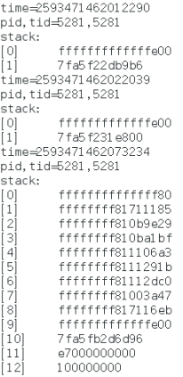

2017年7月28日有新的补充，见补充分割线之后！
========================================================
在上一篇《Linux perf子系统的使用（二）——采样（signal方式）》中，我使用了信号来接收采样完成通知，并在回调函数中读取最新的采样值。虽说回调方式有很多优点，但是并不是太通用。更加糟糕的是，信号会打断几乎所有的系统调用，使得本来的程序逻辑被破坏。另一个很糟糕的点是，如果一个进程中需要开多个采样器，那么就要共享同一个事件回调函数，破坏了封装性。
因此，最好有一个阻塞式轮询的办法。嗯，这就是今天要讲的东西——通过poll()函数等待采样完成。
其实poll()轮询的实现比信号的方式简单，只要把perf_event_open()返回的文件描述符当做普通的文件描述符传入poll()就可以了。在创建perf文件描述附时，唯一需要注意的就是需要手动设置wakeup_events的值。wakeup_events决定了多少次采样以后进行一次通知（poll模式下就是让poll返回），一般设置为1。
直接上代码吧，和《Linux perf子系统的使用（二）——采样（signal方式）》中的代码比较一下就一目了然了。
perf_poll.cpp
#include <poll.h>
#include <errno.h>
#include <stdio.h>
#include <stdint.h>
#include <assert.h>
#include <signal.h>
#include <string.h>
#include <unistd.h>
#include <signal.h>
#include <sys/mman.h>
#include <sys/ioctl.h>
#include <sys/syscall.h>
#include <linux/perf_event.h>
// the number of pages to hold ring buffer
#define RING_BUFFER_PAGES 8
// a wrapper for perf_event_open()
static int perf_event_open(struct perf_event_attr *attr,
pid_t pid,int cpu,int group_fd,unsigned long flags)
{
return syscall(__NR_perf_event_open,attr,pid,cpu,group_fd,flags);
}
static bool sg_running=true;
// to receive SIGINT to stop sampling and exit
static void on_closing(int signum)
{
sg_running=false;
}
int main()
{
// 这里我强行指定了一个值
pid_t pid=6268;
// create a perf fd
struct perf_event_attr attr;
memset(&attr,0,sizeof(struct perf_event_attr));
attr.size=sizeof(struct perf_event_attr);
// disable at init time
attr.disabled=1;
// set what is the event
attr.type=PERF_TYPE_SOFTWARE;
attr.config=PERF_COUNT_SW_CPU_CLOCK;
// how many clocks to trigger sampling
attr.sample_period=1000000;
// what to sample is IP
attr.sample_type=PERF_SAMPLE_IP;
// notify every 1 overflow
attr.wakeup_events=1;
// open perf fd
int perf_fd=perf_event_open(&attr,pid,-1,-1,0);
if(perf_fd<0)
{
perror("perf_event_open() failed!");
return errno;
}
// create a shared memory to read samples from kernel
void* shared_mem=mmap(0,(1+RING_BUFFER_PAGES)*4096,PROT_READ,MAP_SHARED,perf_fd,0);
if(shared_mem==0)
{
perror("mmap() failed!");
return errno;
}
// reset and enable
ioctl(perf_fd,PERF_EVENT_IOC_RESET,0);
ioctl(perf_fd,PERF_EVENT_IOC_ENABLE,0);
// the offset from the head of ring-buffer where the next sample is
uint64_t next_offset=0;
// poll perf_fd
struct pollfd perf_poll;
perf_poll.fd=perf_fd;
perf_poll.events=POLLIN;
signal(SIGINT,on_closing);
while(sg_running)
{
if(poll(&perf_poll,1,-1)<0)
{
perror("poll() failed!");
break;
}
// the pointer to the completed sample
struct sample
{
struct perf_event_header header;
uint64_t ip;
}*
sample=(struct sample*)((uint8_t*)shared_mem+4096+next_offset);
// the pointer to the info structure of ring-buffer
struct perf_event_mmap_page* info=(struct perf_event_mmap_page*)shared_mem;
// update the offset, wrap the offset
next_offset=info->data_head%(RING_BUFFER_PAGES*4096);
// allow only the PERF_RECORD_SAMPLE
if(sample->header.type!=PERF_RECORD_SAMPLE)
continue;
printf("%lx\n",sample->ip);
}
printf("clean up\n");
// disable
ioctl(perf_fd,PERF_EVENT_IOC_DISABLE,0);
// unmap shared memory
munmap(shared_mem,(1+RING_BUFFER_PAGES)*4096);
// close perf fd
close(perf_fd);
return 0;
}
可以看到除了获取通知的部分由signal改为poll()以外，几乎没有改动。
g++ perf_poll.cpp -o perf_poll sudo ./perf_poll
====================2017年7月28日补充==================
首先，为了方便以后的使用，我把perf采样callchain的功能封装成了一个C++的类，它能够针对一个特定的pid进行采样，支持带有超时的轮询。接口声明如下：
CallChainSampler.h
#ifndef CALLCHAINSAMPLER_H
#define CALLCHAINSAMPLER_H
#include <stdint.h>
#include <unistd.h>
// a class to sample the callchain of a process
class CallChainSampler
{
public:
// the structure of a sampled callchain
struct callchain
{
// the timestamp when sampling
uint64_t time;
// the pid and tid
uint32_t pid,tid;
// the depth of callchain, or called the length
uint64_t depth;
// <depth>-array, each items is an IP register value
const uint64_t* ips;
};
// constructor
// pid: the process's id
// period: how many clocks to trigger a sample
// pages: how many pages (4K) allocated for the ring-buffer to hold samples
CallChainSampler(pid_t pid,uint64_t period,uint32_t pages);
// destructor
~CallChainSampler();
// start sampling
void start();
// stop sampling
void stop();
// wait and get the next sample
// timeout: the max milliseconds that will block
// max_depth: the max depth of the call chain
// callchain: the sampled callchain to be outputed
// return: if get before timeout, return 0,
// if timeout, return -1
// if an error occurs, return errno
// ATTENTION: the field [ips] in callchain should be used immediately,
// don't hold it for too long time
int sample(int32_t timeout,uint64_t max_depth,struct callchain* callchain);
private:
// the perf file descriptor
int fd;
// the mmap area
void* mem;
// how many pages to hold the ring-buffer
uint32_t pages;
// the offset in the ring-buffer where the next sample is
uint64_t offset;
};
#endif
实现基本就是把上面的C代码封装一下：
CallChainSampler.cpp
#include "CallChainSampler.h"
#include <poll.h>
#include <errno.h>
#include <assert.h>
#include <string.h>
#include <stdexcept>
#include <sys/time.h>
#include <sys/mman.h>
#include <sys/ioctl.h>
#include <sys/syscall.h>
#include <linux/perf_event.h>
// a wrapper for perf_event_open()
static int perf_event_open(struct perf_event_attr *attr,
pid_t pid,int cpu,int group_fd,unsigned long flags)
{
return syscall(__NR_perf_event_open,attr,pid,cpu,group_fd,flags);
}
// a tool function to get the time in ms
static uint64_t get_milliseconds()
{
struct timeval now;
assert(gettimeofday(&now,0)==0);
return now.tv_sec*1000+now.tv_usec/1000;
}
#define min(a,b) ((a)<(b)?(a):(b))
CallChainSampler::CallChainSampler(pid_t pid,uint64_t period,uint32_t pages)
{
// create a perf fd
struct perf_event_attr attr;
memset(&attr,0,sizeof(struct perf_event_attr));
attr.size=sizeof(struct perf_event_attr);
// disable at init time
attr.disabled=1;
// set what is the event
attr.type=PERF_TYPE_SOFTWARE;
attr.config=PERF_COUNT_SW_CPU_CLOCK;
// how many clocks to trigger sampling
attr.sample_period=period;
// what to sample is IP
attr.sample_type=PERF_SAMPLE_TIME|PERF_SAMPLE_TID|PERF_SAMPLE_CALLCHAIN;
// notify every 1 overflow
attr.wakeup_events=1;
// open perf fd
fd=perf_event_open(&attr,pid,-1,-1,0);
if(fd<0)
throw std::runtime_error("perf_event_open() failed!");
// create a shared memory to read samples from kernel
mem=mmap(0,(1+pages)*4096,PROT_READ,MAP_SHARED,fd,0);
if(mem==0)
throw std::runtime_error("mmap() failed!");
this->pages=pages;
// the offset of next sample
offset=0;
}
CallChainSampler::~CallChainSampler()
{
stop();
// unmap shared memory
munmap(mem,(1+pages)*4096);
// close perf fd
close(fd);
}
void CallChainSampler::start()
{
// enable
ioctl(fd,PERF_EVENT_IOC_ENABLE,0);
}
void CallChainSampler::stop()
{
// disable
ioctl(fd,PERF_EVENT_IOC_DISABLE,0);
}
int CallChainSampler::sample(int32_t timeout,uint64_t max_depth,struct callchain* callchain)
{
if(callchain==0)
throw std::runtime_error("arg <callchain> is NULL!");
// the poll sturct
struct pollfd pfd;
pfd.fd=fd;
pfd.events=POLLIN;
// the time when start
uint64_t start=get_milliseconds();
while(1)
{
// the current time
uint64_t now=get_milliseconds();
// the milliseconds to wait
int32_t to_wait;
if(timeout<0)
to_wait=-1;
else
{
to_wait=timeout-(int32_t)(now-start);
if(to_wait<0)
return -1;
}
// wait next sample
int ret=poll(&pfd,1,to_wait);
if(ret==0)
return -1;
else if(ret==-1)
return errno;
// the pointer to the completed sample
struct sample
{
struct perf_event_header header;
uint32_t pid,tid;
uint64_t time;
uint64_t nr;
uint64_t ips[0];
}*
sample=(struct sample*)((uint8_t*)mem+4096+offset);
// the pointer to the info structure of ring-buffer
struct perf_event_mmap_page* info=(struct perf_event_mmap_page*)mem;
// update the offset, wrap the offset
offset=info->data_head%(pages*4096);
// allow only the PERF_RECORD_SAMPLE
if(sample->header.type!=PERF_RECORD_SAMPLE)
continue;
// fill the result
callchain->time=sample->time;
callchain->pid=sample->pid;
callchain->tid=sample->tid;
callchain->depth=min(max_depth,sample->nr);
callchain->ips=sample->ips;
return 0;
}
}
最后要补充一个我最新的发现！perf_event_open()里面传入的pid，本质上是一个线程id，也就是tid。它只能监控一个线程，而无法监控一个进程中的所有线程。所以要用到实际项目中，肯定得配合使用epoll来监控所有的线程。
测试代码如下：
#include <stdio.h>
#include <signal.h>
#include <stdlib.h>
#include "CallChainSampler.h"
CallChainSampler* sampler;
// to receive SIGINT to stop sampling and exit
static void on_closing(int signum)
{
delete sampler;
exit(0);
}
int main()
{
// create a sampler, pid=5281, 10000 clocks trigger a sample
// and allocate 128 pages to hold the ring-buffer
sampler=new CallChainSampler(5281,10000,128);
signal(SIGINT,on_closing);
sampler->start();
for(int i=0;i<10000;i++)
{
CallChainSampler::callchain callchain;
// sample, max depth of callchain is 256
int ret=sampler->sample(-1,256,&callchain);
printf("%d\n",ret);
if(ret==0)
{
// successful sample, print it out
printf("time=%lu\n",callchain.time);
printf("pid,tid=%d,%d\n",callchain.pid,callchain.tid);
printf("stack:\n");
for(int j=0;j<callchain.depth;j++)
printf("[%d] %lx\n",j,callchain.ips[j]);
}
}
return 0;
}
